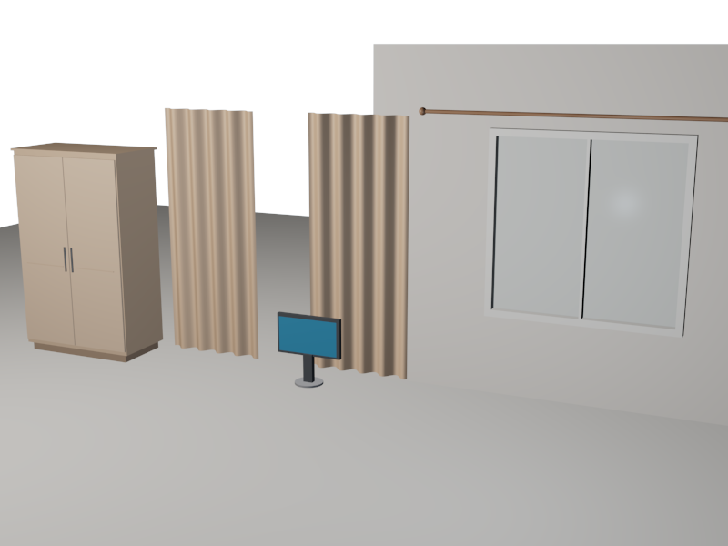
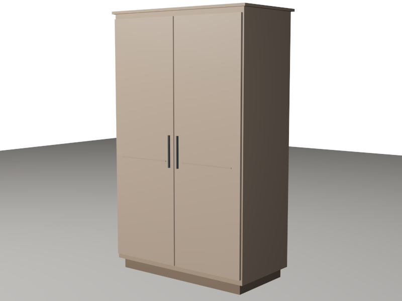
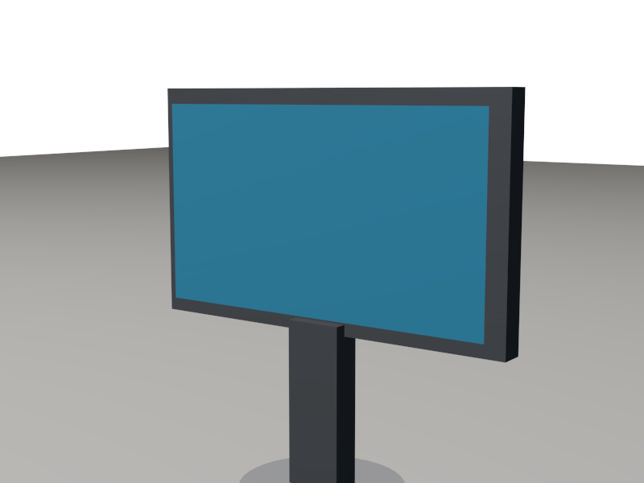
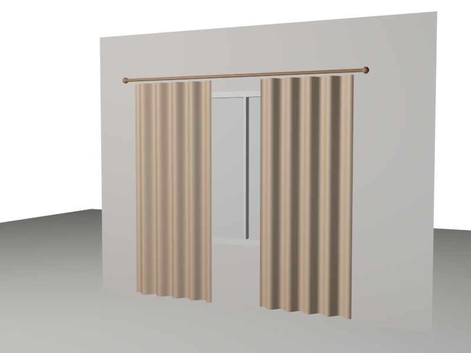
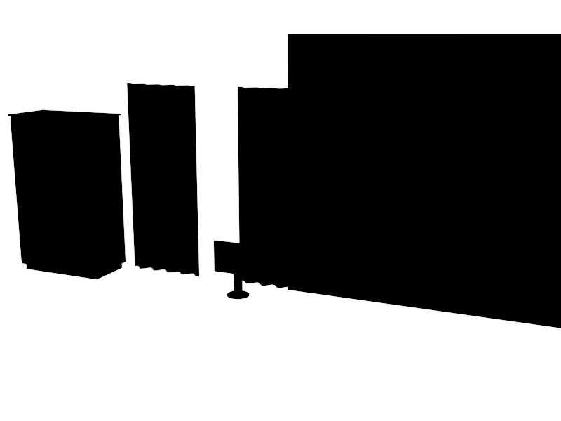
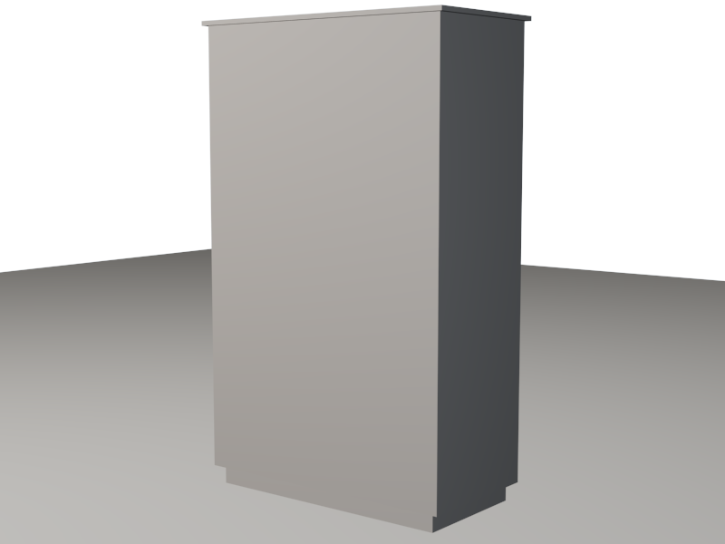
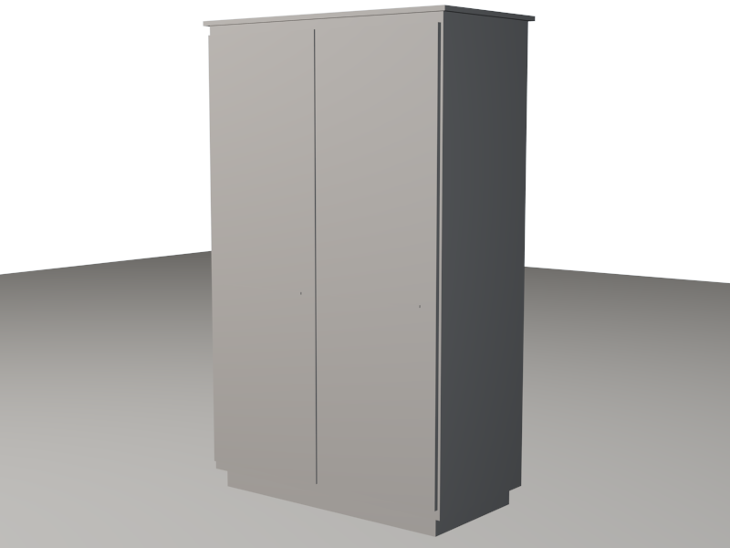

00
查看大图
COMPOSITE SCENE
室内一角
All Scenes / Interior Study
衣柜靠左、显示器居中、窗帘靠右。三个独立场景在同一个镜头里重新排布，共用地面、三点灯光与一台目标摄像机。
- 模型
- 3 件
- 部件
- 27 个
- 对象
- 45 个
3DS MAX · INTERIOR STUDY · 2026
三件日常物件的建模记录——衣柜、显示器与窗帘。 从厘米级尺度、基础体块到材质与三点布光， 一步一步搭出室内的一角。

01 — SELECTED WORKS
全部由 3ds Max 基础几何体与可编辑网格搭建。 每件模型保留独立场景与剪影通道， 点击卡片查看细节、部件构成与源文件。
COMPOSITE SCENE
All Scenes / Interior Study
衣柜靠左、显示器居中、窗帘靠右。三个独立场景在同一个镜头里重新排布，共用地面、三点灯光与一台目标摄像机。

01 查看模型Wardrobe

02 查看模型Monitor

03 查看模型Curtain
02 — MAKING OF
建模不是堆细节，而是不断校准比例与关系。
下面这条流程，对应 build.ms 里真实执行的六个阶段。

SETUP
重置场景，单位切到厘米，画幅固定 800 × 600，背景设为偏冷的浅灰蓝。所有模型共享同一套尺度与色彩基准，后续组合才不会失真。
BLOCKOUT
衣柜从 120 × 60 × 192 cm 的柜体开始；显示器先落 26 cm 圆盘与 26 cm 颈柱；窗帘先砌 380 × 300 cm 的墙。先看大关系，再谈细节。
DETAIL
门缝留 1 cm，把手用圆柱，顶板与踢脚各压出一圈层次；窗框、竖梃、玻璃依次嵌入；帘布转成 Editable Mesh，用正弦波做出 4.2 cm 的褶皱。
MATERIAL
StandardMaterial 控制漫反射、光泽度与高光。木色分柜体、柜门、踢脚、线条四层；显示器用深灰塑料配低饱和蓝屏；帘布是米色织物，玻璃保留高光泽。
LIGHTING
暖色主光 0.85、冷色补光 0.30、顶部白光 0.22，全部使用 OmniLight。目标摄像机按物件高度单独构图，避免统一视角带来的呆板。
RENDER
每个场景先出正式渲染，再切纯黑剪影检查轮廓与遮挡，随后保存独立 .max。最后把三件模型合并进 all.max，输出组合镜头。
CLAY → MATERIAL
以双门衣柜为例 · 3 个阶段

-- 统一尺度与画幅
units.DisplayType = #Metric
units.MetricType = #Centimeters
renderWidth = 800
renderHeight = 600
backgroundColor = color 206 216 228
-- 三点布光：主光 / 补光 / 顶光
KeyLight = OmniLight multiplier:0.85
FillLight = OmniLight multiplier:0.30
TopLight = OmniLight multiplier:0.22
-- 每个场景：渲染 → 存盘 → 剪影校验
render camera:SceneCam outputfile:"preview/all.png"
saveMaxFile "all.max" quiet:true
silhouetteRender cam "preview/sil_all.png"03 — THE COMPOSITE
独立模型解决“像不像”，组合场景解决“在不在一个空间里”。共用地面与灯光后，比例、朝向与遮挡关系才真正成立。
04 — ABOUT
余家杰 · 学号 25120032013
韶关学院 · 教育科学学院
课程练习作品：以 3ds Max 参数化建模完成三件室内物件，并记录从体块、材质、布光到渲染校验的完整流程。网站使用纯 HTML / CSS / JavaScript 构建，可直接部署于 GitHub Pages。